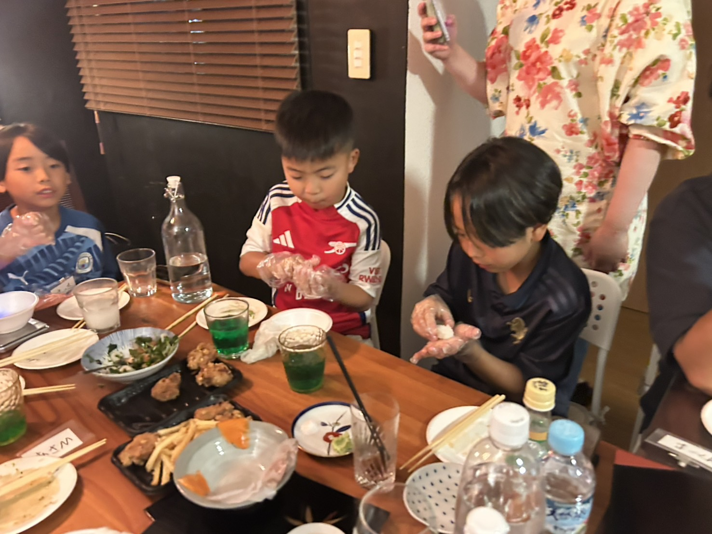
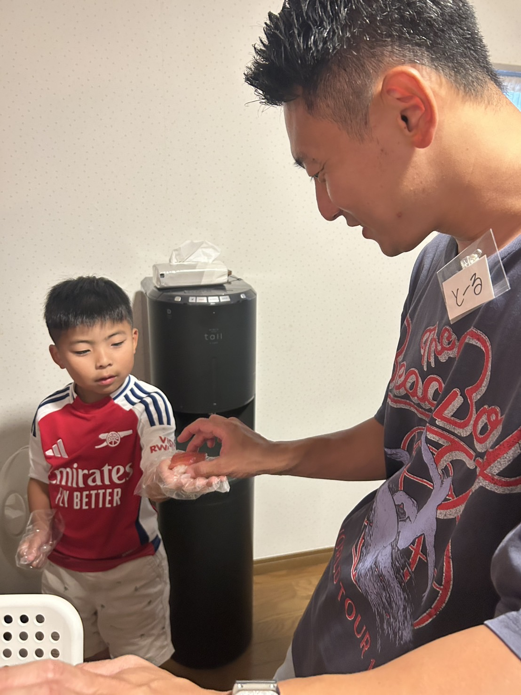
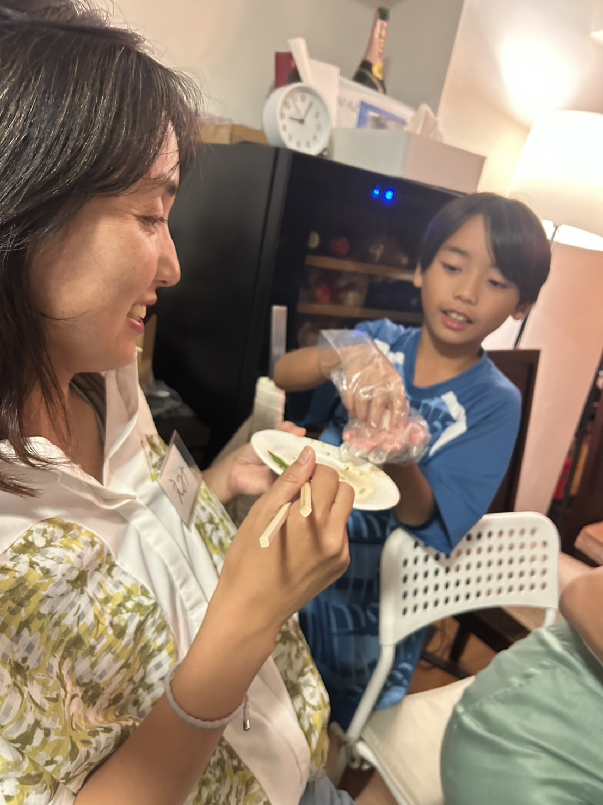
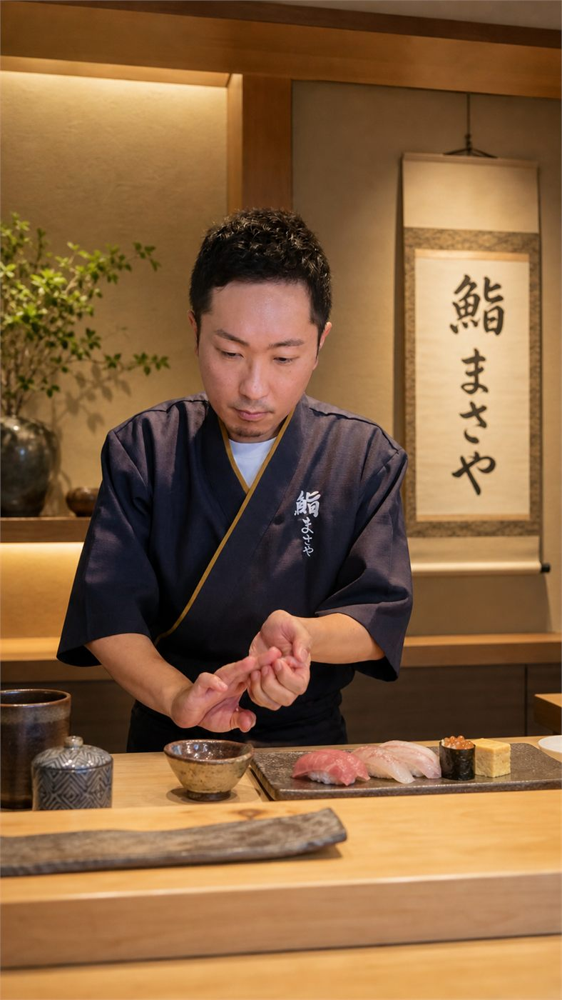

食べるだけではなく、
親子で一緒に握る。
シャリに触れ、シャリ玉を作り、ネタを乗せて脇を締める。親子で同じ手元を見ながら、握った一貫をその場で味わいます。
子どもだけの教室ではなく、保護者の方も一緒に手を動かす体験です。親1人と子ども2人、親2人と子ども1人など、ご家族の人数に合わせて参加できます。


まずはシャリに触れる
手元を見ながら、シャリ玉を作るところから練習します。
親子で鮨を握る
準備したネタを乗せて形を整えます。難しい返しや、包丁を使う作業は行いません。
握った鮨を、その場で食べる
自分で握った一貫を、家族と一緒に味わいます。
鮨の種類と
食べられる量
大人も子どもも、
1人最低10貫。
沼津港で仕入れた新鮮なお魚をご用意します。ネタは仕入れ状況に合わせて3〜5種類。それぞれのネタで、複数貫を握っていただきます。
同じネタでも、塩と醤油、生と炙りなどで食べ比べ。味の違いも楽しみながら、親子で握って食べる体験です。
ネタがある限り、おかわりもしていただけます。握りに加えて、巻物もお出しします。シャリも、しっかり食べていただけるよう十分に用意します。
内容はその日の仕入れに合わせたおまかせです。ネタの種類はご指定いただけません。
ご家族での参加について
親子2名 10,000円
追加は、大人も子どもも1人5,000円。
保護者の方も、体験とお食事にご参加いただきます。
| 親1人＋子ども1人 | 10,000円 |
|---|---|
| 親1人＋子ども2人 | 15,000円 |
| 親2人＋子ども1人 | 15,000円 |
| 親2人＋子ども2人 | 20,000円 |
- 参加人数は、保護者・子どもを合わせて8名までです。子どもは全体で最大4名とします。
- 子どもは保護者の方と一緒にご参加ください。
- 子ども3名以上で参加を希望するご家族は、年齢などを事前にお知らせください。
- 無料の見学・付き添い枠は設けていません。
開催概要・アクセス
- 開催予定日
- 2026年11月3日（火・祝）
- 時間
- 調整中
- 会場予定
- ANEW（長泉町）
静岡県駿東郡長泉町中土狩518-34
ANEW公式サイトを見る - 対象
- 小学生以上の子どもと保護者
- 定員
- 合計8名／うち子ども最大4名
- 参加費
- 1人5,000円（大人・子ども共通）
- 内容
- 鮨の握り体験・食べ比べ・お食事（握りと巻物）
- 主催
- 鮨まさや 後藤将哉

一緒に握る時間を、
僕がご案内します。
鮨まさや 後藤将哉
13年間の会社員生活を経て、自身の働き方や人との関わり方を見つめ直す中で、未経験から鮨職人の道へ。
「鮨は最強のコミュニケーションツール」を軸に、紹介制鮨会「鮨まさや」を主宰しています。
今回は、お子さんと保護者の方が一緒に握る体験をご案内します。
参加前によくあるご質問
鮨を握るのが初めてでも参加できますか？
初めての方に向けて、シャリ玉を作るところからご案内します。ネタとシャリは準備したものを使い、包丁を使う作業は行いません。
親も鮨を握れますか？
保護者の方も一緒に握って、その場で食べる体験です。大人・子どもとも参加費は1人5,000円です。
兄弟や、両親そろっての参加はできますか？
親1人＋子ども2人、親2人＋子ども1人など、ご家族の人数に合わせて参加できます。定員は合計8名・子ども最大4名です。子ども3名以上のご家族は、年齢などを事前にお知らせください。
食事として、どれくらい食べられますか？
大人・子どもとも、1人最低10貫を握っていただけます。ネタがある限りおかわりも可能です。3〜5種類のネタで食べ比べを楽しみ、巻物もお召し上がりいただけます。
ネタの種類は選べますか？
内容は、沼津港での仕入れ状況に合わせたおまかせです。ネタの種類はご指定いただけません。
食物アレルギーがある場合は？
申込時に必ずお知らせください。仕入れや調理の都合により対応できない場合もあるため、対応できるか確認したうえでご案内します。
持ち物と飲み物
手に合うサイズの手袋をご持参ください
食品用・エンボス加工の使い捨て手袋をご持参ください。こちらでも予備をご用意しますが、サイズが合わない場合があるため、特にお子さまは手に合うものをご用意いただくと安心です。
服の汚れが気になる方は、エプロンもお持ちください。
飲み物は持ち込み自由です
お好きな飲み物をお持ち込みいただけます。20歳以上の方は、お酒の持ち込みも可能です。
お申し込みについて
お申し込みはGoogleフォームで受け付けます。受付開始後、このページからお進みいただけます。